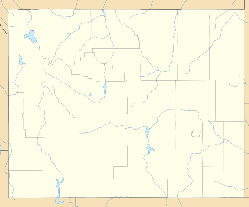
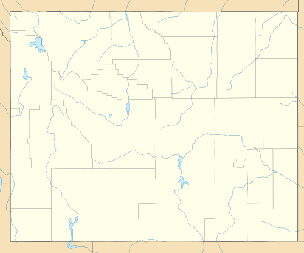
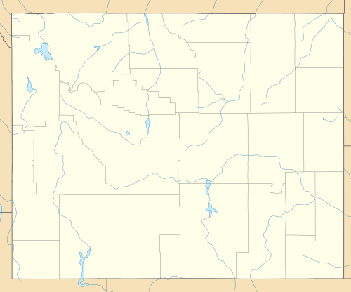

From Wikipedia, the free encyclopedia

| Location | 206 Walnut St., Douglas, Wyoming, United States |
| Coordinates: | 42°45′47″N 105°23′06″W |
| Area | less than one acre |
| Built | 1914 |
| Architectural style | Classical Revival |
| NRHP reference # | 08001003[1] |
| Added to NRHP | October 10, 2008 |
Hotel LaBonte is a historic hotel in Douglas, Wyoming, United States. Built in 1913-1914, it was part of the town's early 20th century building boom, the result of new railroad and road connections. Local investors engaged the Baerresen Brothers of Cheyenne and Denver as architects, and contractor Edward Reavill erected the three story brick structure. It had electrical lighting, steam heat and telephones in 54 guest rooms. The U-shaped hotel is on a corner lot at the intersection of North Second and Walnut Streets in downtown Douglas. Projecting wings facing Walnut Street flank a recessed courtyard that accommodates the hotel's entrance. The dining room occupies the ground floor of the east wing, and two storefronts occupy the west wing on the corner. The lobby has a tiled floor, a beamed ceiling and decorative columns. Windows were replaced during renovations in 1967 and after a 1981 fire.[2]
The hotel's name was chosen for its association with bountifulness, and in honor of the reputed first resident of Converse County, Pierre LaBonte.[3] Hotel LaBonte was placed on the National Register of Historic Places on October 10, 2008.[1] The hotel was renovated for a third time in 2015. It remains in operation as a hotel.[2]